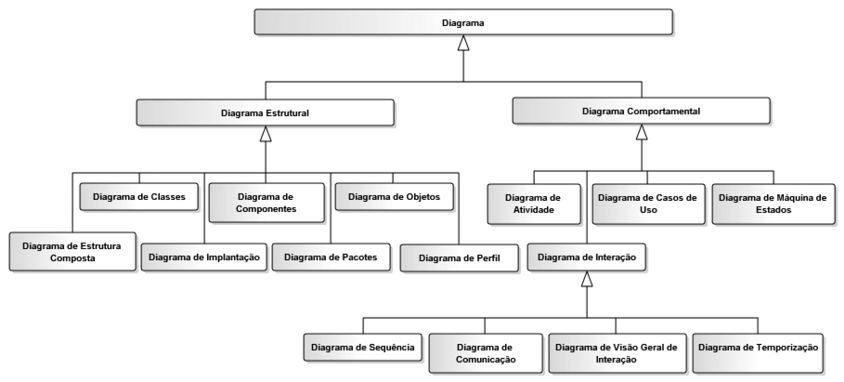
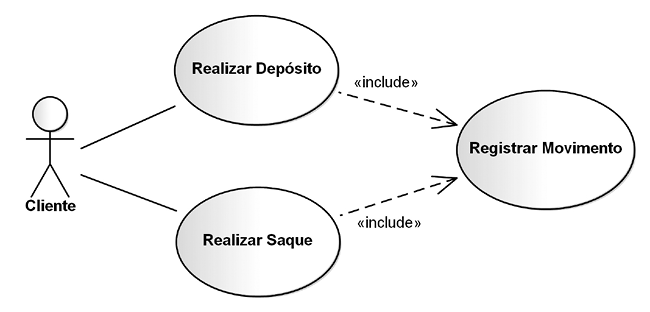
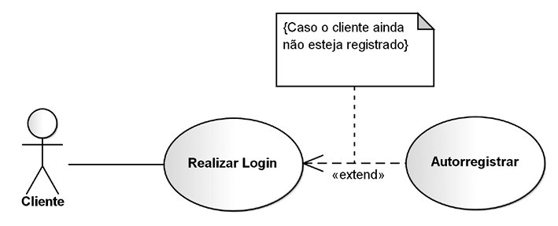

1. Taxonomia dos 14 Diagramas da UML 2 e Pilares de OO (Caps. 1 e 2)
Padronizada pelo OMG a partir do trabalho de Grady Booch, James Rumbaugh e Ivar Jacobson (Three Amigos), a UML 2 organiza seus 14 diagramas em dois grandes grupos: 7 Diagramas Estruturais (visão estática) e 7 Diagramas Comportamentais (visão dinâmica, incluindo os 4 Diagramas de Interação).

2. Diagrama de Casos de Uso: Atores, Include, Extend e Fronteira (Cap. 3)
Inclusão (<<include>>)
Execução obrigatória de um comportamento compartilhado. A seta tracejada aponta do Caso Base → Caso Incluído.

Extensão (<<extend>>)
Execução opcional/condicional disparada em um ponto de extensão. A seta aponta do Caso Extensor → Caso Base.

3. Mapeamento de Polimorfismo e Visibilidade em Python (exemplo_poo.py)
class ContaComum:
def __init__(self, numero: str, saldo_inicial: float = 0.0):
self._numero = numero
self._saldo = float(saldo_inicial) # Visibilidade protegida (#)
def saque(self, valor: float) -> bool:
if 0 < valor <= self._saldo:
self._saldo -= valor
return True
return False
class ContaEspecial(ContaComum):
def __init__(self, numero: str, saldo_inicial: float = 0.0, limite: float = 500.0):
super().__init__(numero, saldo_inicial)
self._limite = float(limite)
def saque(self, valor: float) -> bool:
"""Polimorfismo (Override): permite saque até (saldo + limite)."""
if 0 < valor <= (self._saldo + self._limite):
self._saldo -= valor
return True
return False